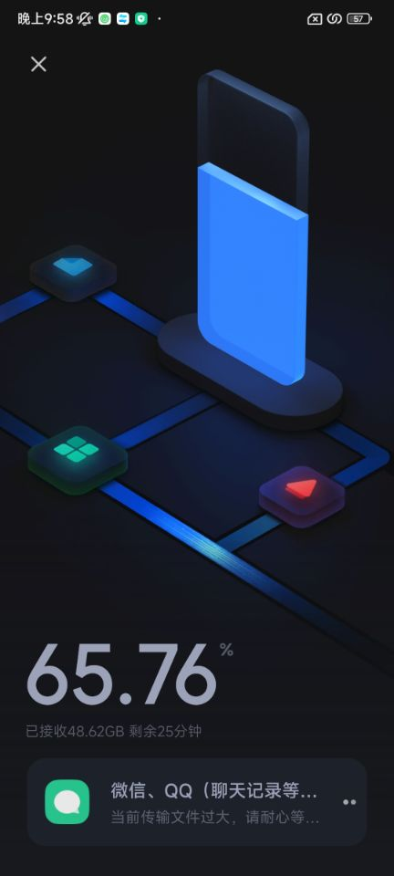
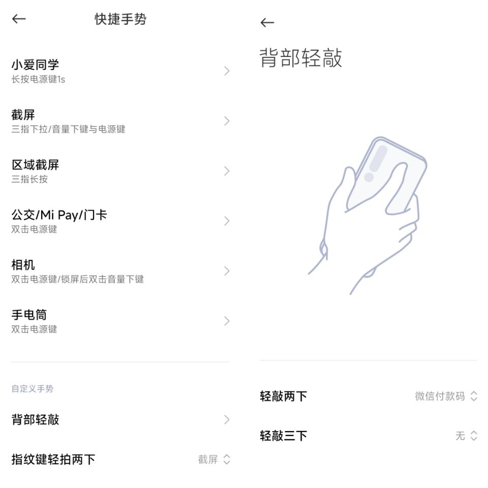

红米Note12Turbo上手体验与真我GTNeo对比
这两天入手了红米Note12Turbo，在更换手机和使用过程中有不少感触，拿出来讲一讲。
原手机是真我GTNeo闪速版12+256的版本，21年暑假买的，没记错的话应该是2000出头的价格。闪速版和普通版的参数基本一致，除了屏幕和电池稍有不同，闪速版的充电要快一点，是65w快充，这个快充放当年是相当领先的了，毕竟两年后手上的这台红米也只有67w快充。
参数对比什么的我就不一一陈述了，可以参考这个真我 GT Neo 闪速版（12GB/256GB/全网通/5G版）和红米 Note 12 Turbo（12GB/512GB）【参数对比】，我主要讲一下体验部分。
真我是在近乎首发的时候买的，据说这个机子在22年初就已经降到了1300+（8+256）的程度，确实有点让人意外。手上的红米倒不是首发买的，这台手机是3月份发布的，经过4个月的时间，风评不错，在多方参考之后，决定入手。到手的是12+512版本的，说实话，我对16+1T版本的很是心动，但是考虑到预算和需求问题，还是选择了12+512的。
原本的真我经过两年的使用，卡顿和续航有点问题，中间也因为摔坏而更换了一次屏幕，因为是内屏摔坏的，所以更换了整块屏幕。但是当时的官方给出的屏幕价格是800+，已经快赶上二手整机的价格了，所以就换了一块100多的第三方屏幕，而代价呢，就是120hz刷新率变为了90hz，而且没有了屏下指纹识别。卡顿的感受可能不少也缘于这个刷新率，不过更多还是手机本身的问题，在我的各种折腾下，256G存储还是不太够用了，在加上天玑1200的处理器放到现在的表现确实不太行，所以在日常使用体验上，卡顿是常有的，尤其是在播放高码率视频的时候，长按倍速画面就停滞不动了，其它诸如打开app，各种点击等都能感受到流畅度大不如前。此外，续航也是一个问题，犹记得刚买的时候，一天充一次电还是够的，现在呢，早上满电，中度使用的情况下，到了下午1-2点的时候基本就没电了，一天要充2-3次。指纹和发热相比上面倒是小问题了。没有了指纹，改用人脸识别，除了在晚上没光的时候不能识别外，基本没什么问题，还有一些支付软件以及银行的登录也有不方便之处。第三方的屏幕有些发热不均，明显下1/3的地方发热会更严重，不过本来到了夏天手机都会烫手，这个问题倒也被掩盖了。
红米Note12Turbo我买的是冰羽白的配色，说实话，颜值真的很高，虽然到手我就换上了手机壳，但是它的颜值确实高，背面不是纯白，而是像结冰一样的纹理，这个后背让我很满意。

这台红米处理器是骁龙7+gen2的，名为7+gen2，实际为低配版8+，因为架构基本相同，均为1+3+4，不同点为大中核的频率稍低，以及砍掉了2MB的缓存，看了几个评测后，比较满意这块处理器的表现，能效比相当不错，这也是买这台机子的重要原因之一。在618之前，我看上的是iqoo neo7se，12+256的配置，搭载天玑8200，看了很久，在615的时候价格来到了1509，性价比很高了，但是最终没有买。如今价格在1600+接近1700，比较了下两台机子，200多换来性能和能效都更好的处理器、256g存储以及和平板的联动还是不错的。

到手验完机后，首先来一次手机搬家。消息称小米联合蓝绿厂组建了“换机联盟”，支持包括各自品牌以及子品牌如红米、iqoo、realme在内的手机迁移数据，包括第三方应用数据，无疑是很好的消息，但实际体验下来，这个换机功能依然存在bug。在小米换机和欢太手机搬家版本满足官网要求的版本下，我的真我手机中的第三方应用数据依然不能迁移到这台红米上，具体表现为虽然确有授权迁移第三方应用数据，但是到迁移第三方应用数据时进度完全卡住不动，长达4个小时。结果就是我手动取消，包括微信和qq聊天记录在内的所有第三方应用数据全部不能传输，我使用了微信和qq的聊天记录迁移功能，其它应用数据无奈留在原手机。
在第二天我询问相关客服时，真我客服甩锅，表示你换红米手机就该去问红米手机客服去，小米客服含糊其辞，不能解决问题，体验较差。
在原手机恢复出厂设置的过程中，也体验到真我系统的部分槽点。首先是，手机备份不能备份第三方应用数据，那备份软件还有何用？相比之下，看了眼MIUI的备份，还是可以备份第三方应用数据的。既然如此那确实没办法了，我就备份了原手机能备份的所有数据。其次是，便签内容不能导出，原手机的便签存了较多重要内容，但是真我的便签却不能导出，最终选择了云同步来解决。不过这个并不只是真我的问题，MIUI也是不能导出和导入便签的，不知其它厂商如何。但是无论如何，用户端的最终体验是不好的，不止我一个人有迁移便签的需求，在网上也找到了同样的真我用户的诉求，时隔将近两年，官方依然没有做出这方面的改进。
比较好的地方是，真我的云同步可以同步相册、WLAN、密码本等，还是有利于恢复出厂设置后的数据恢复的。在导入备份的过程中，我发现了它会保留和原先相同的桌面图标排布，这点还是很可以的。系统设置也可以大致恢复，有一些除外，例如手机的音效、铃声设置、手机壁纸和字体设置。
我并非第一次用小米的手机，上大学前的手机也是小米的一部4+64的，但是忘记了具体牌子。如今的MIUI系统变化还是挺大的，在上手这台MIUI14的红米时，也遇到不少优点和槽点。
先说优点吧，首先是多应用媒体音调节的功能，这个是我盼望已久的功能，可惜真我一直没有做。动画也比真我要快一点，就显得流畅了点。本来想吐槽一下红米的这个拍照快捷手势的，它手势和真我的一样电源键+音量下键，但是问题在于，真我这两个按键是在两边，我右手拿手机可以一只手截屏，红米这两个按键都是在手机右侧，这就导致了我右手拿手机完全无法一只手截屏，这对习惯了这个按键组合人来讲真的很不方便。但是但是，MIUI有个自定义手势的功能，可以自定义的功能极多，包括微信、支付宝付款码、截图、相机、小爱等等，这可比那两个按键方便多了。
此外，这个传送门功能也是相当不错，任何地方长按都可以在侧边呼应出来，图片识别有扫码和识物功能，文本识别有搜索、分词复制和翻译，个人觉得实用性相当不错。

悲报，就在我写这文章时，又发现了痛苦的一件事。手机搬家也会忽略掉带有.nomedia文件的文件夹，这导致了我很多数据的丢失，而我现在才发现！
接下来是槽点，主要有两类，一类槽点是属于习惯问题，另一类则是小米系统设计问题。习惯问题挺多的，诸如上边写的截图快捷键、以及下拉菜单分两边（这个可以在设置中切换）等
其它槽点每一个都可以单独伶出来说一说，第一个也是最大的槽点：逆天的相册云同步。在打开相册云同步时，可以自由选择同步的相册，但是相机确实默认同步不能手动开关的，这就导致5G的空间被轻松占满，逼你去买它的空间。而且在云端删除照片时也会删除掉本地的图片，这个设置还没有一个明显的开关，只能通过断开设备与云的连接来解决，参考这个miui13云相册清理，防止误删本地相片
第二是自带的搜狗输入法定制版。在自己绘制皮肤时不能调整输入区域的宽度，它默认的宽度不一定就是适合的，这就导致后续设计完毕调整宽度时会导致图像比例失调。而且，自己绘制皮肤时不能调整字体粗细，出来的结果不甚满意。在调整工具栏时，不管怎么样最右侧都是一个广告，应用精选，很容易误触，找了半天也没找到在哪关掉，只得上网搜，结果竟然是叫”节日活动提醒“，伪装的有够逆天的。
第三是有关主题的，我原本真我手机用的字体是Aa-楷体，但是小米的主题商店里并没有这款字体，就比较难受。切换到一个中意的字体后，没调整字体大小，视觉上却又比原本小了点，而且切换不到一个合适的大小，不是偏小就是偏大。文件夹的透明度相比真我高了点，视觉上就不是那么明显，这是一个适应的问题。
还有一些小的槽点，比如自动亮度不是那么好用，在一些环境下偏暗，还要我手动调高亮度、小米妙享中心能实现的功能还很有限等等。
今天出门吃饭又发现了指纹解锁如果设置为轻触解锁的话，放口袋里会有概率误触。
目前的使用体验大致就这样。